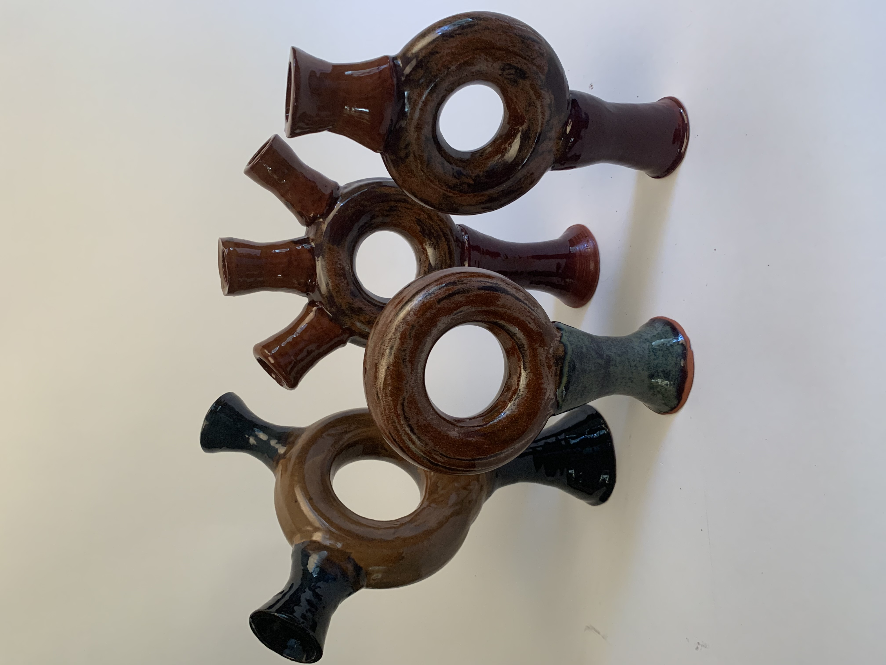

So, I'm a STEM kid. However, since I went to a high school that emphasized a liberal arts curriculum, I also got into... wait for it... art!!! Ceramics was super fun, and although I wasn't really that good at it (think abstract art but really take the definition of abstract liberally), I'll try to put an artistic spin on this site!
- A Spin!
- Hooked on a Feeling
- Four's a Crowd
A Spin!
The art of ceramics revolves around a lot of circular objects, from donuts to circles to cylinders. Thus, why not a spiral?
Hooked on a Feeling
Sometimes pretty things happen when you break your piece! These were
originally tori, but we snap them in half and mold them into hooks!
Four's a Crowd
Sometimes pieces have those small aspects about them that connect
them in really interesting ways. Here we have four pieces being pretty
connected!
